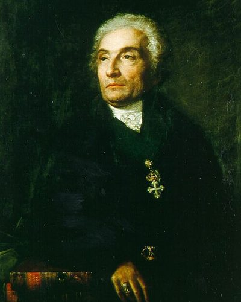

Ideologies / Reactionary
What is Reactionary Monarchism?
Reactionary Monarchism is a political ideology in the Reactionary family. It reads the French Revolution as divine punishment for a society that put human reason above God. No constitution can be written by men; legitimate authority grows from history and providence. Order requires an absolute monarch, and above him the spiritual authority of the Pope.
Throne and altar.
Defined from: Joseph de Maistre, Considerations on France (1797) and The Pope (1819)
See how close you are to Reactionary Monarchism Dare a friend to answer as one


Where Reactionary Monarchism stands on 13 axes
Each axis runs from 0 to 100. A score of 50 is the middle. On a classic compass it sits in the Authoritarian Right quadrant.
| Axis | Position | Score | In words |
|---|---|---|---|
| EconomyMarket to Planned | 45 | Balanced | |
| OwnershipPrivate to Collective | 25 | Strongly Private | |
| RightsLiberty to Security | 90 | Very strongly Security | |
| GovernmentDemocracy to Autocracy | 100 | Very strongly Autocracy | |
| StructureDecentralised to Centralised | 85 | Very strongly Centralised | |
| NationInternationalist to Nationalist | 60 | Leans Nationalist | |
| ImmigrationMulticulturalist to Assimilationist | 85 | Very strongly Assimilationist | |
| ValuesProgressive to Traditional | 100 | Very strongly Traditional | |
| TechnologyAccelerationist to Precautionary | 80 | Strongly Precautionary | |
| EnvironmentIndustrialist to Environmentalist | 45 | Balanced | |
| ReligionSecular to Religious | 100 | Very strongly Religious | |
| MilitaryPacifist to Militarist | 70 | Strongly Militarist | |
| TradeFree Trade to Protectionist | 50 | Balanced |
Ideologies closest to Reactionary Monarchism
- Radical Traditionalism88% alike
- Divine Right Absolutism85% alike
- Austrofascism84% alike
- Estado Novo Corporatism (Salazarism)84% alike
- Khomeinism82% alike
Its opposite on this map is Fully Automated Luxury Communism, at 15%.
Parties near Reactionary Monarchism
- Law and JusticePoland. Polski model państwa dobrobytu (2019)71% alike
- ChegaPortugal. Salvar Portugal (2025)70% alike
- Tory PartyUnited Kingdom. The Tamworth Manifesto (1834)68% alike
- VoxSpain. Un programa para lo que importa (2023)68% alike
Common questions
What is Reactionary Monarchism?
Reactionary Monarchism is a political ideology in the Reactionary family. It reads the French Revolution as divine punishment for a society that put human reason above God. No constitution can be written by men; legitimate authority grows from history and providence. Order requires an absolute monarch, and above him the spiritual authority of the Pope.
What does Reactionary Monarchism believe?
In one line: Throne and altar. Its strongest positions are Autocracy, Traditional, Religious. It reads the French Revolution as divine punishment for a society that put human reason above God. No constitution can be written by men; legitimate authority grows from history and providence. Order requires an absolute monarch, and above him the spiritual authority of the Pope.
Who founded Reactionary Monarchism?
Reactionary Monarchism is defined here from Considerations on France (1797) and The Pope (1819) by Joseph de Maistre. The thinker most tied to it is Joseph de Maistre (1753 to 1821).
Is Reactionary Monarchism left wing or right wing?
On a classic two axis compass Reactionary Monarchism falls in the Authoritarian Right quadrant, which means the economic right and the authoritarian side. Left and right hide a lot, though, which is why EthosScales scores it on thirteen separate axes.
How is Reactionary Monarchism different from Radical Traditionalism?
They are close, at a 88% match. The biggest gaps are on Military, where Reactionary Monarchism scores 70 and Radical Traditionalism scores 90, and Structure, where Reactionary Monarchism scores 85 and Radical Traditionalism scores 70. On each axis, 0 is one end and 100 is the other.
Think this is wrong? Suggest a correction. The scores are editorial estimates.